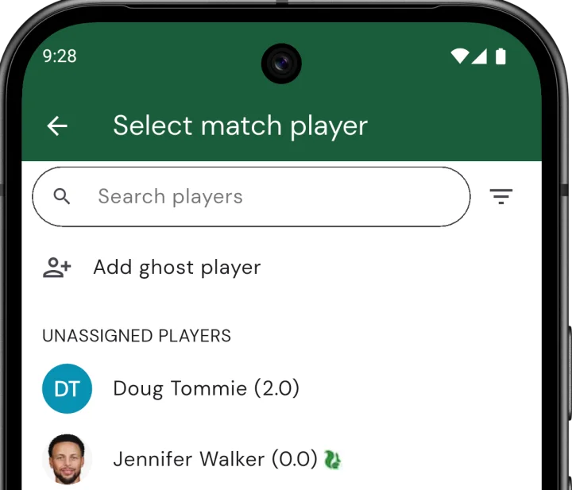

Blinds and Ghost Players
Players drop out, teams don’t divide evenly, someone’s late. Squabbit gives you two ways to fill an empty slot without reshuffling everyone:
- Blind — a real player from another team or match whose score is reused. The actual human plays one round; their score gets counted in two places.
- Ghost player — a synthetic opponent. No real human; the ghost simply shoots net par on every hole. Used in head-to-head match formats.
Where each one is allowed depends on the format:
- In team-based stroke formats (scramble, best ball, four-ball, etc.) you can only use a blind. Someone has to physically hit the ball, so a synthetic ghost wouldn’t produce a real score for the team to combine.
- In match-based formats (Ryder Cup, Singles Matchplay, Team Matchplay) you can use either a blind (slot a real player into the empty match) or a ghost (drop in a synthetic net-par opponent).
Adding a blind to a team (Scramble, Best Ball, etc.)
For team-based stroke formats — scramble, best ball, four-ball, etc. — the team’s score is calculated from real shots played by real people. When a team is short, a blind from another team fills the gap:
- You pick a player from another team to act as the blind
- That player’s hole scores count toward both teams — once for their original team, once for the team they’re a blind on
- The player keeps competing normally for their original team and doesn’t need to play any extra holes
- A blind does not receive any purse or winnings from the team they’re a blind on, even if that team wins
To add a team blind:
- Tap
- Tap Teams
- Create a team or edit an existing team you want to add a blind to
- Tap the green + button and choose the player whose score should fill the gap

Filling a match (Ryder Cup, Singles Matchplay, Team Matchplay)
Match-based formats are head-to-head. Each match needs two sides — if one side is short, you have a choice between a blind and a ghost.
Option 1: Match blind (real player)
Add the same real player to multiple matches. Their actual round counts toward each match they’re slotted into. Use this when you want a real human’s score on both sides — for example a strong club player carrying their own match plus filling in an empty slot for the opposing team.
- Open the Schedule tab and tap the match with the empty slot
- Tap the empty player slot and pick the same real player from the picker

Option 2: Ghost player (synthetic net-par opponent)
Use this when no real player is available to double-up — or when you don’t want anyone’s real score doing double duty. The ghost is a low-friction placeholder with no name and no handicap to pick: they simply shoot net par on every hole (gross = par, with no strokes given), giving the opposing match a scoring opponent without inflating or deflating the result.
The only choice you make is whether the ghost is linked to a real missing player:
- In a league event, the app prompts you to pick which missing league player the ghost is filling in for. The ghost’s points then roll up to that player’s league standings, and the player is moved to Spectator for the event.
- Outside a league event (or if you choose “Not filling in for anyone”), the ghost is unlinked — just there to balance the lineup, no points attribution.
To add a ghost player to a match:
- Open the Schedule tab and tap the match you want to add the ghost to
- Tap the empty player slot to open the Select match player picker
- Tap Add ghost player at the top of the picker
- If this is a league event, pick the missing player you’re filling in for (or tap Not filling in for anyone). Outside a league event the ghost is added immediately.

Linked ghosts appear as “Ghost (filling in for …)” in match views; unlinked ghosts just show as “Ghost”. To remove a ghost, tap the slot it occupies and pick a different player — the ghost disappears, and any linked player is automatically restored to Participant.
Picking the right one
- Team scramble / best ball with uneven sides → blind. Pick a player from another team; their score does double duty.
- Ryder Cup or Team Matchplay missing one player → ghost is usually cleanest. Use a blind only when you specifically want a real human’s score on both sides.
- League event missing a regular → ghost linked to that player. Their league standings carry the ghost’s points so a missed week doesn’t tank the season.
- Casual singles matchplay where you just need an opponent → unlinked ghost. Net par on every hole, no fuss.